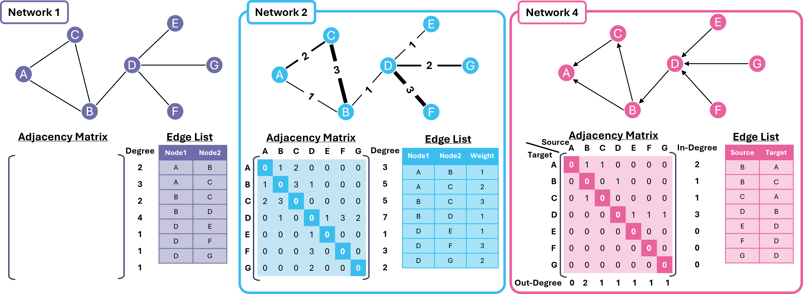
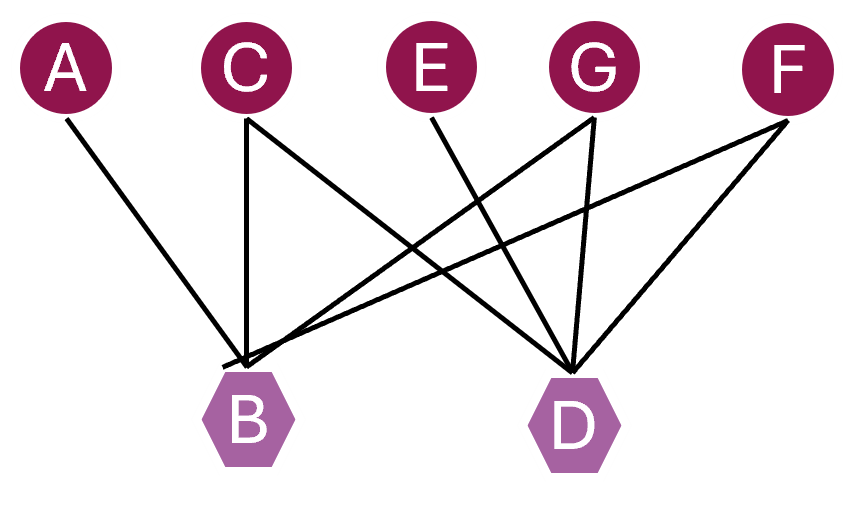

Learning Objectives
Introduction
In this section of the lesson, you will learn how to construct and manipulate networks programmatically using the NetworkX Python library. We will explore how different data structures such as adjacency matrices and edge lists encode network structure, and how these representations can be converted into graph objects for analysis. By building networks from NumPy arrays, Python lists and Pandas DataFrames, we will develop and hone in on practical skills for translating structured biological data into analysable network models.
Drawing graphs with NetworkX
NetworkX is a Python package for studying networks in Python. In this chapter, we will make use of NetworkX to create networks and study their properties.
Firstly, let's begin by importing NetworkX:
To make networks intelligible to a computer, they can be represented as one of the following:
- Adjacency matrix: this is where rows and columns are assigned to nodes in the network, and the presence of an edge is indicated by a numerical value.
- Edge list: this is a list of the edges in a network. This list can be stored in a two-column matrix for directed or undirected networks. For weighted networks, a third column would be present, representing the edge weight.

- Network 1: The adjacency matrix of this undirected and unweighted network is represented as a symmetric matrix containing solely 0 and 1 values. This represents the presence and absence of connections, respectively. The edge list of this undirected and unweighted network is represented by two columns of nodes.
- Network 2: The adjacency matrix of this undirected and weighted network are represented by a symmetric matrix containing the weights of the edges. Similar to Network 1, when no connection is present, the edge is represented by a value of 0. The list of edges for this undirected and weighted network is represented by two columns of nodes, and a column of the edge weight.
- Network 3: The adjacency matrix of this directed and unweighted network is represented as an unsymmetric matrix, containing values of either 0 or 1. The edge list of this undirected and weighted network is represented by two columns of nodes, specifying the source and target, showing the signal flow of the edge in question.
Creating networks using adjacency matrices
Next, we will cover how to create network with Python, using an adjacency matrix or edgelist.
In order to create a network from an adjacency matrix, we must firstly construct said adjacency matrix. Based on the Network 1 example given above, let's create the adjacency matrix variable as a NumPy array.
Next, we must convert this adjacency matrix into a network. We can do so using the NetworkX method from_numpy_array, as follows.
We can then view the edges of this network, using the edges() attribute; and the nodes using nodes(), as follows.
Note that, when using the NumPy array, the names of the nodes (i.e. A, B, C etc.) are not stored in the network. In order to change the node names, we can use the relabel_nodes method together with a mapping dictionary, as follows.
In the case of larger networks with thousands of nodes, the corresponding adjacency matrices would also be very large. For instance, if a network has 1,000 nodes, the adjacency matrix would have a dimension of 1000 x 1000. Most of these nodes may not be connected, and thus the matrix itself could be sparse, and filled with values of 0. Reading this volume of data into memory would prove to be resource-heavy for your computer.
Creating networks using edge lists
Contrastingly, edge lists are more succinct, and are legible even for larger networks. This is because an absent connection with a value of 0 is not stored as data, unlike in an adjacency matrix; making them computationally more efficient.
In the following cell, let's create the directed network referenced above (Network 4), using an edge list. Firstly, we must create a Python list that will serve as our edge list, containing elements of paired tuples. We can do this using the function from_edgelist.
Then, as before, we can observe the edges and nodes in the network.
Notice that by using the from_edgelist() function, we do not have to assign the names again to the network, using a dictionary.
Reading DataFrames into networks
It is also possible to read in an edge list that has been previously stored as a Pandas DataFrame. Let's use Network 2 as an example from the previous figure at the start of the lesson. The edge list for Network 2 is stored as a .csv file in your repository's data folder, and can be read into a Pandas DataFrame using the from_pandas_edgelist function.
A Pandas DataFrame is a two-dimensional, labelled data structure in Python that organises data into rows and columns, similar to a spreadsheet or table, and is commonly used to store and manipulate network edge lists before converting them into graph objects.
As before, we can access the network's edge and node attributes:
The edge weight information can then be accessed using the get_edge_attributes method.
1.
Create a NetworkX graph object based on the adjacency matrix, from the bipartite 'Network 4' example.

Summary
In this section, we focused on constructing and manipulating networks using the NetworkX library. We demonstrated how to create graph objects from an adjacency matrix, a Python edge list, and a Pandas DataFrame, highlighting the practical differences between these representations. We explored how to access and relabel nodes and edges, specify directed graphs using DiGraph, and extract edge attributes such as weights. These steps bridge raw tabular biological data and analysable graph objects, preparing us for quantitative network analysis in subsequent sections.